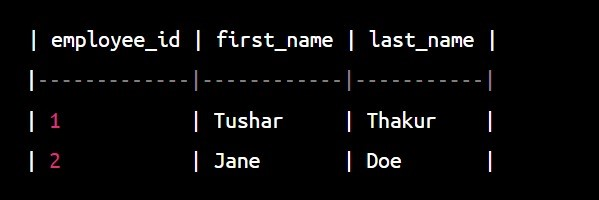

- 4. DROP a Table:
This command is used to delete the whole table from the database.
DROP TABLE employees;
- 5. SELECT data in Table:
SELECT is the fundamental SQL command used to reterive data from one or more tables in database.Sometime SELECT command is used to filter and sort the data of the table.
SELECT first_name, last_name FROM employees;
- 6. UPDATE the data in table:
The UPDATE statement is an SQL command used to modify existing data in a table.
-
UPDATE employees SET first_name = 'Tushar', last_name ='Thakur' WHERE id=1 ;

- 7. DELETE rows and columns from table:
The DELETE statement is an SQL command used to delete one or more rows from a table.
-
DELETE FROM employees WHERE id = 3;
